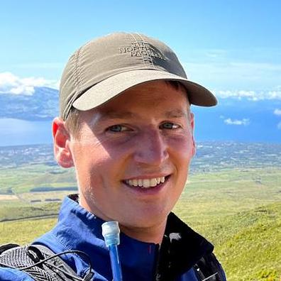

Velkommen.
Mit navn er Emil Nielsen, og jeg er uddannet civilingeniør indenfor Vand & Miljø. Jeg er fuldtidsansat hos Rambøll Aarhus som hydrauliker.
Jeg har udviklet en række værktøjer til ArcGIS og Python, som håndterer diverse udfordringer indenfor hydraulik i DHIs MIKE Urban og MIKE+.
Bibliotekerne kan findes her:
E-mail: enielsen93@hotmail.com
Tlf.: 60 64 52 04
8600 Silkeborg